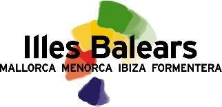
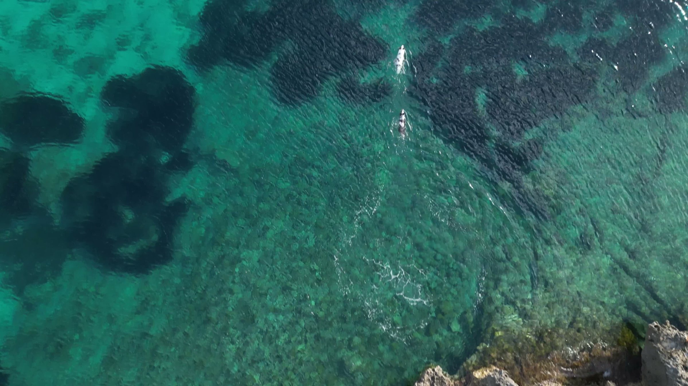
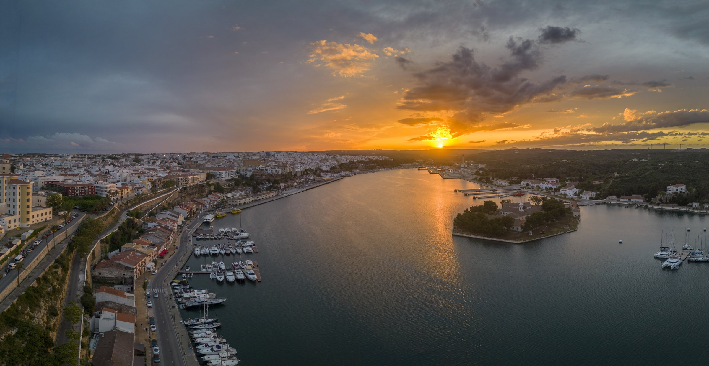

Photography & film
New visual material created on location, from aerial views and landscapes to people, places and experiences.

CREATIVE PROPOSAL
A VISUAL CAMPAIGN PROPOSAL FOR ILLES BALEARS
Photography and film that invite people to discover the islands through their landscapes, culture and local life.
Explore the idea ↘01 / THE OPPORTUNITY
The islands have stories that can be told throughout the year.
We propose an on-location production focused on the experiences Illes Balears chooses to promote beyond peak summer: nature, gastronomy, culture and the people who give each place its character.
A visual library for your marketing team, or a complete campaign developed and produced together.
SEE WHAT WE CAN CREATE ↗02 / CREATIVE DIRECTIONS
Select a direction to explore what we could produce together.

LAND & SEA / A DIFFERENT PACE
From coastal paths to quieter inland routes, we can photograph and film the experiences that make the islands worth exploring in different seasons.
FOR DESTINATION WEBSITES · CAMPAIGN CREATIVE · TRAVEL PARTNERS
Images are examples of Juan's photography, including aerial work in Menorca; not every portfolio image shown was made in the Balearic Islands. New content would be produced on location.

03 / A LOCAL POINT OF VIEW
We would work with local guides, producers and collaborators to tell stories rooted in the islands: the food, the work and the traditions that visitors can discover respectfully.
We would choose the island, audience and experiences with your team before production begins.
04 / THE OFFER
One production shaped around the priorities of your destination and the way your team works.
New visual material created on location, from aerial views and landscapes to people, places and experiences.
Use finished images and footage with your own agency, or commission our team to develop and produce the campaign.
Choose the markets, season and subjects; production time, formats and usage are agreed together.
05 / THE PHOTOGRAPHER
I'm Juan Aizpuru, a photographer and filmmaker working across travel, people and places. I've photographed in Menorca before, including aerial imagery, and would return with my team to create work specifically for your objectives.
VIEW MY PORTFOLIO ↗LET'S MEET AT FITUR
I'd love to discuss the islands, seasons and audiences that matter most to your team.
Visit my website ↗Or connect with Juan Aizpuru on FITUR LiveConnect.